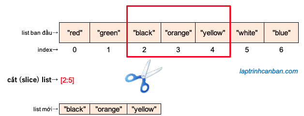

記事掲載：https://laptrinhcanban.com/ja
Python でリストをスライスする方法のチュートリアル。このレッスンの後、Python でのスライス リストの概念と、インデックスを使用して Python でリストをスライスする方法を学習します。
Pythonのスライスリストとは何ですか?
Python のスライス リストとも呼ばれる Python のスライス リストは、元のリストの範囲内の要素を取得して新しいリストを作成する操作です。クリッピング範囲は、Python の要素のインデックスを介して指定されます。

Python でのスライス リストの構文は次のとおりです。
org_list [ start_index : end_index : step]
そこで、
- org_listは元のリストです
- start_index : 切り取り開始位置の要素のインデックス
- end_index: クリッピング位置の最後にある要素のインデックス
スライス リスト python の結果には、スライスの最初の要素が含まれますが、カットの最後の要素は含まれないことに注意してください。切り取り終了位置の要素全体を取得したい場合は、切り取り結果にその要素を含めることができるように、 end_index を 1 だけ指定する必要があります。
Python でのスライス リストの具体例は次のとおりです。
nums = [0, 1, 2, 3, 4, 5, 6, 7, 8, 9] |
Pythonの スライス リストは元のリストを変更せず、元のリストの範囲内の要素をコピーして新しいリストを作成するだけであることに注意してください。
nums = [0, 1, 2, 3, 4, 5, 6, 7, 8, 9] |
Python でスライス方法の一覧
元のリストから範囲を切り取る
クリッピングの開始位置と終了位置をそれらの位置にある要素のインデックスで指定することにより、次の例のようにpython リストから範囲を切り捨てることができます。
nums = [0, 1, 2, 3, 4, 5, 6, 7, 8, 9] |
同様に、次のように、要素が文字列であるリストから範囲を切り取ることができます。:
l = ['a','b','c','d','e'] |
元のリストのインデックス範囲外のインデックス値でスライスの開始位置または終了位置を指定した場合、スライス リスト機能は元のリストのみから可能な最大範囲のみをスライスできます。例えば：
nums = [0, 1, 2, 3, 4, 5, 6, 7, 8, 9] |
リストpythonの前から真ん中までの範囲を切り取る
Python リストの先頭から途中までを切り出すにはリスト スライス構文を記述するときにstart_indexを省略します。
たとえば、[:5] を書きます。すると、[0:5] と同じく、Python は暗黙のうちに 0 から始まる位置を理解し、同様にリストを切り出します。
nums = [0, 1, 2, 3, 4, 5, 6, 7, 8, 9] |
結果：
[0, 1, 2, 3, 4] |
リストpythonの途中から最後までの範囲を切り取る
リストの途中からリストの最後までPythonでリストをスライス（スライス）するには、リストのスライス構文を書くときにend_indexを省略します。
たとえば、 [5:]を書きます。すると、Python は次の例のようにリストの要素数 (len()関数で計算できます) で末尾の位置を暗黙のうちに理解します。
nums = [0, 1, 2, 3, 4, 5, 6, 7, 8, 9] |
Kết quả:
[5, 6, 7, 8, 9] |
Python のリストを逆スライス
負のインデックスで開始位置と終了位置を指定すると、Python でリストを逆方向にスライス (スライス) できます。このメソッドを使用して、python でリストを逆にすることができます。
例えば：
nums = [0, 1, 2, 3, 4, 5, 6, 7, 8, 9] |
次のように、元のリストをカットバックするときに、いくつかの要素をスキップしてスキップすることもできます。
nums = [0, 1, 2, 3, 4, 5, 6, 7, 8, 9] |
次のように、元のリストの範囲内で Python のリストを逆スライスすることもできます。
nums = [0, 1, 2, 3, 4, 5, 6, 7, 8, 9] |
元のリストを指定された位置で 2 つの部分に分割します
Pythonのスライスリストを使用することにより、元のリストを指定された場所で 2 つの小さな部分に分割できます。次の例では、次のように元のリストをインデックス位置 4 で 2 つの小さなリストに分割します。
nums = [0, 1, 2, 3, 4, 5, 6, 7, 8, 9] |
結果：
[0, 1, 2, 3] |
Pythonでリストを切り取るときに要素をジャンプしてスキップする | ステップ引数
Python でのリストスライスの徳技は、リストをスライスするときにいくつかの要素をジャンプおよびスキップできることです。
Python でリストをスライスするときに追加の step 引数を使用することで、次の例のように、インデックスを 1 ステップ離して要素を飛び越えてスライスすることができます。
nums = [0, 1, 2, 3, 4, 5, 6, 7, 8, 9] |
結果：
[0, 1, 2, 3, 4, 5, 6, 7, 8, 9] |
次のように python リストをスライスするときに、範囲内の要素をスキップしてスキップすることもできます。
nums = [0, 1, 2, 3, 4, 5, 6, 7, 8, 9] |
結果：
[2, 3, 4, 5, 6] |
まとめ
上記 Kiyoshiはpython でリストをスライス する方法を示しました。レッスンの内容をよりよく理解するために、今日の例を書き直す練習をしてください。
そして、次のレッスンで Python の知識についてさらに学びましょう。
URL Link
ホーム › 初心者向けのpython学習>>10. pythonのリスト